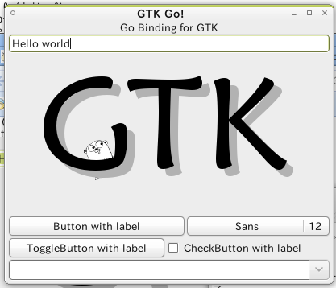
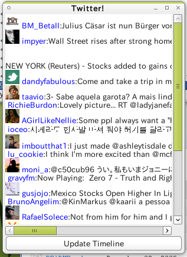

Whats
Go bindings for GTK
Go bindings for GTK
To experiment with go-gtk, you can just compile and run the example program:
# git clone https://github.com/mattn/go-gtk # cd go-gtk # make install # make example # ./example/demo/demoor
# go get github.com/mattn/go-gtk/gtk
package main
import (
"github.com/mattn/go-gtk/gdkpixbuf"
"github.com/mattn/go-gtk/glib"
"github.com/mattn/go-gtk/gtk"
"os"
"os/exec"
"path"
"regexp"
"sort"
"strings"
)
func uniq(strings []string) (ret []string) {
return
}
func authors() []string {
if b, err := exec.Command("git", "log").Output(); err == nil {
lines := strings.Split(string(b), "\n")
var a []string
r := regexp.MustCompile(`^Author:\s*([^ <]+).*$`)
for _, e := range lines {
ms := r.FindStringSubmatch(e)
if ms == nil {
continue
}
a = append(a, ms[1])
}
sort.Strings(a)
var p string
lines = []string{}
for _, e := range a {
if p == e {
continue
}
lines = append(lines, e)
p = e
}
return lines
}
return []string{"Yasuhiro Matsumoto <mattn.jp@gmail.com>"}
}
func main() {
var menuitem *gtk.MenuItem
gtk.Init(nil)
window := gtk.NewWindow(gtk.WINDOW_TOPLEVEL)
window.SetPosition(gtk.WIN_POS_CENTER)
window.SetTitle("GTK Go!")
window.SetIconName("gtk-dialog-info")
window.Connect("destroy", func(ctx *glib.CallbackContext) {
println("got destroy!", ctx.Data().(string))
gtk.MainQuit()
}, "foo")
//--------------------------------------------------------
// GtkVBox
//--------------------------------------------------------
vbox := gtk.NewVBox(false, 1)
//--------------------------------------------------------
// GtkMenuBar
//--------------------------------------------------------
menubar := gtk.NewMenuBar()
vbox.PackStart(menubar, false, false, 0)
//--------------------------------------------------------
// GtkVPaned
//--------------------------------------------------------
vpaned := gtk.NewVPaned()
vbox.Add(vpaned)
//--------------------------------------------------------
// GtkFrame
//--------------------------------------------------------
frame1 := gtk.NewFrame("Demo")
framebox1 := gtk.NewVBox(false, 1)
frame1.Add(framebox1)
frame2 := gtk.NewFrame("Demo")
framebox2 := gtk.NewVBox(false, 1)
frame2.Add(framebox2)
vpaned.Pack1(frame1, false, false)
vpaned.Pack2(frame2, false, false)
//--------------------------------------------------------
// GtkImage
//--------------------------------------------------------
dir, _ := path.Split(os.Args[0])
imagefile := path.Join(dir, "../../data/go-gtk-logo.png")
label := gtk.NewLabel("Go Binding for GTK")
label.ModifyFontEasy("DejaVu Serif 15")
framebox1.PackStart(label, false, true, 0)
//--------------------------------------------------------
// GtkEntry
//--------------------------------------------------------
entry := gtk.NewEntry()
entry.SetText("Hello world")
framebox1.Add(entry)
image := gtk.NewImageFromFile(imagefile)
framebox1.Add(image)
//--------------------------------------------------------
// GtkScale
//--------------------------------------------------------
scale := gtk.NewHScaleWithRange(0, 100, 1)
scale.Connect("value-changed", func() {
println("scale:", int(scale.GetValue()))
})
framebox2.Add(scale)
//--------------------------------------------------------
// GtkHBox
//--------------------------------------------------------
buttons := gtk.NewHBox(false, 1)
//--------------------------------------------------------
// GtkButton
//--------------------------------------------------------
button := gtk.NewButtonWithLabel("Button with label")
button.Clicked(func() {
println("button clicked:", button.GetLabel())
messagedialog := gtk.NewMessageDialog(
button.GetTopLevelAsWindow(),
gtk.DIALOG_MODAL,
gtk.MESSAGE_INFO,
gtk.BUTTONS_OK,
entry.GetText())
messagedialog.Response(func() {
println("Dialog OK!")
//--------------------------------------------------------
// GtkFileChooserDialog
//--------------------------------------------------------
filechooserdialog := gtk.NewFileChooserDialog(
"Choose File...",
button.GetTopLevelAsWindow(),
gtk.FILE_CHOOSER_ACTION_OPEN,
gtk.STOCK_OK,
gtk.RESPONSE_ACCEPT)
filter := gtk.NewFileFilter()
filter.AddPattern("*.go")
filechooserdialog.AddFilter(filter)
filechooserdialog.Response(func() {
println(filechooserdialog.GetFilename())
filechooserdialog.Destroy()
})
filechooserdialog.Run()
messagedialog.Destroy()
})
messagedialog.Run()
})
buttons.Add(button)
//--------------------------------------------------------
// GtkFontButton
//--------------------------------------------------------
fontbutton := gtk.NewFontButton()
fontbutton.Connect("font-set", func() {
println("title:", fontbutton.GetTitle())
println("fontname:", fontbutton.GetFontName())
println("use_size:", fontbutton.GetUseSize())
println("show_size:", fontbutton.GetShowSize())
})
buttons.Add(fontbutton)
framebox2.PackStart(buttons, false, false, 0)
buttons = gtk.NewHBox(false, 1)
//--------------------------------------------------------
// GtkToggleButton
//--------------------------------------------------------
togglebutton := gtk.NewToggleButtonWithLabel("ToggleButton with label")
togglebutton.Connect("toggled", func() {
if togglebutton.GetActive() {
togglebutton.SetLabel("ToggleButton ON!")
} else {
togglebutton.SetLabel("ToggleButton OFF!")
}
})
buttons.Add(togglebutton)
//--------------------------------------------------------
// GtkCheckButton
//--------------------------------------------------------
checkbutton := gtk.NewCheckButtonWithLabel("CheckButton with label")
checkbutton.Connect("toggled", func() {
if checkbutton.GetActive() {
checkbutton.SetLabel("CheckButton CHECKED!")
} else {
checkbutton.SetLabel("CheckButton UNCHECKED!")
}
})
buttons.Add(checkbutton)
//--------------------------------------------------------
// GtkRadioButton
//--------------------------------------------------------
buttonbox := gtk.NewVBox(false, 1)
radiofirst := gtk.NewRadioButtonWithLabel(nil, "Radio1")
buttonbox.Add(radiofirst)
buttonbox.Add(gtk.NewRadioButtonWithLabel(radiofirst.GetGroup(), "Radio2"))
buttonbox.Add(gtk.NewRadioButtonWithLabel(radiofirst.GetGroup(), "Radio3"))
buttons.Add(buttonbox)
//radiobutton.SetMode(false);
radiofirst.SetActive(true)
framebox2.PackStart(buttons, false, false, 0)
//--------------------------------------------------------
// GtkVSeparator
//--------------------------------------------------------
vsep := gtk.NewVSeparator()
framebox2.PackStart(vsep, false, false, 0)
//--------------------------------------------------------
// GtkComboBoxEntry
//--------------------------------------------------------
combos := gtk.NewHBox(false, 1)
comboboxentry := gtk.NewComboBoxEntryNewText()
comboboxentry.AppendText("Monkey")
comboboxentry.AppendText("Tiger")
comboboxentry.AppendText("Elephant")
comboboxentry.Connect("changed", func() {
println("value:", comboboxentry.GetActiveText())
})
combos.Add(comboboxentry)
//--------------------------------------------------------
// GtkComboBox
//--------------------------------------------------------
combobox := gtk.NewComboBoxNewText()
combobox.AppendText("Peach")
combobox.AppendText("Banana")
combobox.AppendText("Apple")
combobox.SetActive(1)
combobox.Connect("changed", func() {
println("value:", combobox.GetActiveText())
})
combos.Add(combobox)
framebox2.PackStart(combos, false, false, 0)
//--------------------------------------------------------
// GtkTextView
//--------------------------------------------------------
swin := gtk.NewScrolledWindow(nil, nil)
swin.SetPolicy(gtk.POLICY_AUTOMATIC, gtk.POLICY_AUTOMATIC)
swin.SetShadowType(gtk.SHADOW_IN)
textview := gtk.NewTextView()
var start, end gtk.TextIter
buffer := textview.GetBuffer()
buffer.GetStartIter(&start)
buffer.Insert(&start, "Hello ")
buffer.GetEndIter(&end)
buffer.Insert(&end, "World!")
tag := buffer.CreateTag("bold", map[string]string{
"background": "#FF0000", "weight": "700"})
buffer.GetStartIter(&start)
buffer.GetEndIter(&end)
buffer.ApplyTag(tag, &start, &end)
swin.Add(textview)
framebox2.Add(swin)
buffer.Connect("changed", func() {
println("changed")
})
//--------------------------------------------------------
// GtkMenuItem
//--------------------------------------------------------
cascademenu := gtk.NewMenuItemWithMnemonic("_File")
menubar.Append(cascademenu)
submenu := gtk.NewMenu()
cascademenu.SetSubmenu(submenu)
menuitem = gtk.NewMenuItemWithMnemonic("E_xit")
menuitem.Connect("activate", func() {
gtk.MainQuit()
})
submenu.Append(menuitem)
cascademenu = gtk.NewMenuItemWithMnemonic("_View")
menubar.Append(cascademenu)
submenu = gtk.NewMenu()
cascademenu.SetSubmenu(submenu)
checkmenuitem := gtk.NewCheckMenuItemWithMnemonic("_Disable")
checkmenuitem.Connect("activate", func() {
vpaned.SetSensitive(!checkmenuitem.GetActive())
})
submenu.Append(checkmenuitem)
menuitem = gtk.NewMenuItemWithMnemonic("_Font")
menuitem.Connect("activate", func() {
fsd := gtk.NewFontSelectionDialog("Font")
fsd.SetFontName(fontbutton.GetFontName())
fsd.Response(func() {
println(fsd.GetFontName())
fontbutton.SetFontName(fsd.GetFontName())
fsd.Destroy()
})
fsd.SetTransientFor(window)
fsd.Run()
})
submenu.Append(menuitem)
cascademenu = gtk.NewMenuItemWithMnemonic("_Help")
menubar.Append(cascademenu)
submenu = gtk.NewMenu()
cascademenu.SetSubmenu(submenu)
menuitem = gtk.NewMenuItemWithMnemonic("_About")
menuitem.Connect("activate", func() {
dialog := gtk.NewAboutDialog()
dialog.SetName("Go-Gtk Demo!")
dialog.SetProgramName("demo")
dialog.SetAuthors(authors())
dir, _ := path.Split(os.Args[0])
imagefile := path.Join(dir, "../../data/mattn-logo.png")
pixbuf, _ := gdkpixbuf.NewPixbufFromFile(imagefile)
dialog.SetLogo(pixbuf)
dialog.SetLicense("The library is available under the same terms and conditions as the Go, the BSD style license, and the LGPL (Lesser GNU Public License). The idea is that if you can use Go (and Gtk) in a project, you should also be able to use go-gtk.")
dialog.SetWrapLicense(true)
dialog.Run()
dialog.Destroy()
})
submenu.Append(menuitem)
//--------------------------------------------------------
// GtkStatusbar
//--------------------------------------------------------
statusbar := gtk.NewStatusbar()
context_id := statusbar.GetContextId("go-gtk")
statusbar.Push(context_id, "GTK binding for Go!")
framebox2.PackStart(statusbar, false, false, 0)
//--------------------------------------------------------
// Event
//--------------------------------------------------------
window.Add(vbox)
window.SetSizeRequest(600, 600)
window.ShowAll()
gtk.Main()
}


The library is available under the same terms and conditions as the Go, the BSD style license, and the LGPL (Lesser GNU Public License). The idea is that if you can use Go (and Gtk) in a project, you should also be able to use go-gtk.
Project authors:
Project goal:
Hopefully support following widgets and methods enough to run general application.
Main Loop and Events : 24% ( 6/ 25)
GtkAccelGroup : 10% ( 2/ 19)
GtkAccelMap : 0% ( 0/ 14)
GtkClipboard : 23% ( 7/ 30)
Drag and Drop : 11% ( 4/ 35)
GtkIconTheme : 0% ( 0/ 31)
GtkStockItem : 66% ( 4/ 6)
Themeable Stock Images : 0% ( 0/ 41)
Resource Files : 0% ( 0/ 28)
GtkSettings : 23% ( 3/ 13)
GtkBinding : 0% ( 0/ 14)
Graphics Contexts : 0% ( 0/ 2)
GtkStyle : 0% ( 0/ 64)
Selections : 8% ( 4/ 47)
Version Information : 0% ( 0/ 6)
Testing : 0% ( 0/ 16)
Filesystem Utilities : 0% ( 0/ 7)
GtkDialog : 45% ( 9/ 20)
GtkMessageDialog : 62% ( 5/ 8)
GtkWindow : 23% ( 24/102)
GtkWindowGroup : 0% ( 0/ 5)
GtkAboutDialog : 90% ( 29/ 32)
GtkAssistant : 91% ( 21/ 23)
GtkOffscreenWindow : 0% ( 0/ 3)
GtkAccelLabel : 83% ( 5/ 6)
GtkImage : 29% ( 9/ 31)
GtkLabel : 86% ( 39/ 45)
GtkProgressBar : 83% ( 10/ 12)
GtkStatusbar : 77% ( 7/ 9)
GtkInfoBar : 100% ( 12/ 12)
GtkStatusIcon : 68% ( 26/ 38)
GtkSpinner : 0% ( 0/ 3)
GtkButton : 55% ( 15/ 27)
GtkCheckButton : 100% ( 3/ 3)
GtkRadioButton : 100% ( 8/ 8)
GtkToggleButton : 100% ( 9/ 9)
GtkLinkButton : 75% ( 6/ 8)
GtkScaleButton : 0% ( 0/ 9)
GtkVolumeButton : 0% ( 0/ 1)
GtkEntry : 38% ( 24/ 63)
GtkEntryBuffer : 72% ( 8/ 11)
GtkEntryCompletion : 96% ( 24/ 25)
GtkHScale : 100% ( 2/ 2)
GtkVScale : 100% ( 2/ 2)
GtkSpinButton : 0% ( 0/ 25)
GtkEditable : 100% ( 13/ 13)
GtkTextIter : 20% ( 19/ 91)
GtkTextMark : 0% ( 0/ 7)
GtkTextBuffer : 67% ( 52/ 77)
GtkTextTag : 75% ( 3/ 4)
GtkTextAttributes : 100% ( 5/ 5)
GtkTextTagTable : 83% ( 5/ 6)
GtkTextView : 28% ( 18/ 64)
GtkTreePath : 84% ( 16/ 19)
GtkTreeRowReference : 0% ( 0/ 10)
GtkTreeIter : 100% ( 1/ 1)
GtkTreeModel : 57% ( 15/ 26)
GtkTreeSelection : 75% ( 15/ 20)
GtkTreeViewColumn : 37% ( 20/ 53)
GtkTreeView : 14% ( 14/ 97)
GtkTreeView drag-and-drop : 0% ( 0/ 7)
GtkCellView : 0% ( 0/ 11)
GtkIconView : 16% ( 10/ 62)
GtkTreeSortable : 0% ( 0/ 6)
GtkTreeModelSort : 0% ( 0/ 9)
GtkTreeModelFilter : 0% ( 0/ 11)
GtkCellLayout : 0% ( 0/ 9)
GtkCellRenderer : 100% ( 2/ 2)
GtkCellEditable : 0% ( 0/ 3)
GtkCellRendererAccel : 100% ( 1/ 1)
GtkCellRendererCombo : 100% ( 1/ 1)
GtkCellRendererPixbuf : 100% ( 1/ 1)
GtkCellRendererProgress : 100% ( 1/ 1)
GtkCellRendererSpin : 100% ( 1/ 1)
GtkCellRendererText : 100% ( 2/ 2)
GtkCellRendererToggle : 100% ( 7/ 7)
GtkCellRendererSpinner : 100% ( 1/ 1)
GtkListStore : 83% ( 15/ 18)
GtkTreeStore : 80% ( 17/ 21)
GtkComboBox : 78% ( 30/ 38)
GtkComboBoxText : 100% ( 7/ 7)
GtkComboBoxEntry : 80% ( 4/ 5)
GtkMenu : 50% ( 15/ 30)
GtkMenuBar : 100% ( 8/ 8)
GtkMenuItem : 78% ( 15/ 19)
GtkImageMenuItem : 0% ( 0/ 11)
GtkRadioMenuItem : 0% ( 0/ 9)
GtkCheckMenuItem : 100% ( 10/ 10)
GtkSeparatorMenuItem : 100% ( 1/ 1)
GtkTearoffMenuItem : 100% ( 1/ 1)
GtkToolShell : 0% ( 0/ 9)
GtkToolbar : 0% ( 0/ 34)
GtkToolItem : 0% ( 0/ 29)
GtkToolPalette : 0% ( 0/ 22)
GtkToolItemGroup : 0% ( 0/ 17)
GtkSeparatorToolItem : 0% ( 0/ 3)
GtkToolButton : 0% ( 0/ 14)
GtkMenuToolButton : 0% ( 0/ 7)
GtkToggleToolButton : 0% ( 0/ 4)
GtkRadioToolButton : 0% ( 0/ 6)
GtkUIManager : 0% ( 0/ 17)
GtkActionGroup : 0% ( 0/ 20)
GtkAction : 0% ( 0/ 46)
GtkToggleAction : 0% ( 0/ 6)
GtkRadioAction : 0% ( 0/ 5)
GtkRecentAction : 0% ( 0/ 4)
GtkActivatable : 0% ( 0/ 6)
GtkColorButton : 0% ( 0/ 10)
GtkColorSelectionDialog : 0% ( 0/ 2)
GtkColorSelection : 0% ( 0/ 21)
GtkHSV : 0% ( 0/ 8)
GtkFileChooser : 22% ( 13/ 58)
GtkFileChooserButton : 0% ( 0/ 9)
GtkFileChooserDialog : 100% ( 1/ 1)
GtkFileChooserWidget : 0% ( 0/ 2)
GtkFileFilter : 55% ( 5/ 9)
GtkFontButton : 71% ( 10/ 14)
GtkFontSelection : 0% ( 0/ 14)
GtkFontSelectionDialog : 37% ( 3/ 8)
GtkInputDialog : 0% ( 0/ 1)
GtkAlignment : 100% ( 4/ 4)
GtkAspectFrame : 0% ( 0/ 2)
GtkHBox : 100% ( 1/ 1)
GtkVBox : 100% ( 1/ 1)
GtkHButtonBox : 0% ( 0/ 5)
GtkVButtonBox : 0% ( 0/ 5)
GtkFixed : 100% ( 5/ 5)
GtkHPaned : 100% ( 1/ 1)
GtkVPaned : 100% ( 1/ 1)
GtkLayout : 0% ( 0/ 12)
GtkNotebook : 90% ( 50/ 55)
GtkTable : 93% ( 14/ 15)
GtkExpander : 87% ( 14/ 16)
GtkOrientable : 0% ( 0/ 2)
GtkFrame : 100% ( 9/ 9)
GtkHSeparator : 100% ( 1/ 1)
GtkVSeparator : 100% ( 1/ 1)
GtkHScrollbar : 0% ( 0/ 1)
GtkVScrollbar : 0% ( 0/ 1)
GtkScrolledWindow : 86% ( 13/ 15)
GtkPrintOperation : 13% ( 5/ 36)
GtkPrintContext : 18% ( 2/ 11)
GtkPrintSettings : 0% ( 0/ 74)
GtkPageSetup : 0% ( 0/ 25)
GtkPaperSize : 0% ( 0/ 21)
GtkPrinter : 0% ( 0/ 23)
GtkPrintJob : 0% ( 0/ 10)
GtkPrintUnixDialog : 0% ( 0/ 18)
GtkPageSetupUnixDialog : 0% ( 0/ 5)
GtkAdjustment : 82% ( 14/ 17)
GtkArrow : 0% ( 0/ 2)
GtkCalendar : 0% ( 0/ 17)
GtkDrawingArea : 100% ( 2/ 2)
GtkEventBox : 20% ( 1/ 5)
GtkHandleBox : 0% ( 0/ 8)
GtkIMContextSimple : 0% ( 0/ 2)
GtkIMMulticontext : 0% ( 0/ 4)
GtkSizeGroup : 100% ( 8/ 8)
GtkTooltip : 60% ( 6/ 10)
GtkViewport : 100% ( 9/ 9)
GtkAccessible : 100% ( 3/ 3)
GtkBin : 100% ( 1/ 1)
GtkBox : 100% ( 11/ 11)
GtkButtonBox : 0% ( 0/ 10)
GtkContainer : 18% ( 6/ 33)
GtkItem : 100% ( 3/ 3)
GtkMenuShell : 0% ( 0/ 11)
GtkMisc : 0% ( 0/ 4)
GtkObject : 100% ( 0/ 0)
GtkPaned : 88% ( 8/ 9)
GtkRange : 53% ( 16/ 30)
GtkScale : 90% ( 9/ 10)
GtkSeparator : 100% ( 0/ 0)
GtkWidget : 50% ( 90/180)
GtkIMContext : 0% ( 0/ 11)
GtkPlug : 0% ( 0/ 7)
GtkSocket : 0% ( 0/ 5)
GtkRecentManager : 0% ( 0/ 37)
GtkRecentChooser : 0% ( 0/ 33)
GtkRecentChooserDialog : 0% ( 0/ 2)
GtkRecentChooserMenu : 0% ( 0/ 4)
GtkRecentChooserWidget : 0% ( 0/ 2)
GtkRecentFilter : 0% ( 0/ 12)
GtkBuildable : 0% ( 0/ 10)
Total progress : 33% (1021/3053)